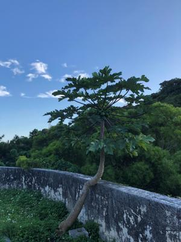

うるがいの話 ある日
最新: ネットサーフィン【うるがいの話 ある日】とは 一日だけのプログです
『うるがいの話』の最新一日だけのプログで、通信料が少なく経済的だ。カニの画像をクリックすると全ての日付が載る『うるがいの話』サイトを表示します
|
|
【うるがいの話】 うるがい(ｳﾙｶﾞｲ urugai)とは、『もずくがに』の名前でとても大きくなります。 |
|---|---|
|
|
【Got cat カミマヤーの話】 たながー（ﾀﾅｶﾞｰtanagaa）とは手長えびのことで、何種類かあり大きいのは車 エビぐらいになります。 |

|
【ぶながぁの話】 ぶながー(bunagaa)とは、赤い髪の毛、赤い身体、そして身長は１ｍ２０ｃｍ ぐらい、川の蟹を食べているの目撃された。場所は沖縄県国頭郡大宜味村のと ある村僕の隣近所に住んでいる爺さんから、聞いた話です。 |
|
|
【ギーマの話】 ギーマ(giima)とは、山原の里山に咲くスズランに似た、 花を付けます。実は食べられます、 気が付くと口の周りが紫になっています。 |
2021年11月27日 (土）ネットサーフィン
17:43

その昔、『ネットサーフィン』（インターネット上のウェブサイトを検索した
り、リンクをたどったりして、次々と閲覧して回ること）という言葉があった
が、昨日も本を１時半まで読んでいた。本を読んでいると、その中でとある本
の名前が出てくる。昨日の読み終えた本は『蠅の王』である。これまでに読ん
だ本などで度々出てきたので借りていた本だが、前半を読んだ段階で、ん！今
一と中断していた。ところが、『ジュリアン・アサンジ自伝』の本で再び『蠅
の王』が出てきた。お、完読しないとダメなのかと読み始め完読する、ん－感
想、今一だった。市立図書館へは、本は予約のみの借り入れである。借りるも
のは、読んだ本の中で出てきた本や、著者が書いた別の本、本で紹介されてい
る類似ジャンヌヌの本、外国だと邦訳した人の本から次回の読書候補になる。
こういうには、ブックサーフィンと言うのだろうか、とネットで調べるとあっ
た！。同じ事をしている人達がいるのだ。話は変わるが、深夜一時頃、フと米
を炊きなおす事を忘れてしまった事を思い出した。でも、一時だしなと諦めた
ついでに、思いだしたことが・・・師匠への返信だ
＞＞三線弾けるのですか？
一応弾けます、夕方３０分程特訓していて曲は１０曲ほど、おほほ
老人は片っ端から・・・忘れてしまう。でも、思いだすのも不思議である
１７時３８分 ビットコインの総資産 ￥１７，８８４
子供に下がっているよと言ったら、そのうち上がるよと余裕で言われた。